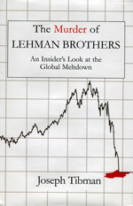

|
 Segnala
ad un amico
| Condividi su Segnala
ad un amico
| Condividi su


 |
Commenti
|
Commenti

La fine di Lehman Brothers: la testimonianza di un Senior Investment
L'intervista esclusiva di Eccellere a Jospeh Tibman, Senior Investment di Lehman, per anni vicino a CEO e CFO dell'istituto bancario collassato nel settembre 2008. Joseph Tibman, il nome è di fantasia, ha appena pubblicato il libro "The murder of Lehman Brothers".
di
Enrico Ratto
 Signor Tibman, anche se non conosciamo la vera sua identità, ci può raccontare la sua storia alla Lehman?
Putroppo non posso rispondere in modo dettagliato perchè la mia identità è nascosta. Posso dirle questo: per la maggior parte della mia carriera, quasi 20 anni, sono stato un ricco Senior Investment banker a Lehman. Durante quel periodo ho lavorato ricoprendo diversi ruoli, altamente coinvolto in molte delle più grandi decisioni strategiche, operazioni di fusioni e acquisizioni fatte da Lehman.
Ho consigliato Top Executive, CEO, CFO ed altre cariche simili. Alla Lehman non ero però parte della cerchia di Dick Fuld. Ad ogni modo conosco praticamente quasi tutti coloro di cui scrivo nel mio libro, alcuni bene, altri meno bene. Nondimeno, dopo 20 anni in una azienda dove ho trascorso molto tempo con i colleghi, ho visto, sentito e son venuto a conoscenza di cose non di dominio pubblico. E, cosa più importante, ho compreso Lehman Brothers e la sua cultura. L'assunzione di un grande rischio da parte di un piccolo gruppo che ha smantellato quello che di fatto era una funzione di gestione di forti rischi è stata una sopresa per la maggior parte delle persone, anche per quelli che erano in Lehman da tempo. I guai che abbiamo affrontato sono stati tenuti segreti da un management team che mai nel passato ci aveva dato motivo di dubitare di esso. Al tempo, questo fatto fu sentito come un tradimento.
Dai media è giunta un'immagine della caduta di Lehman Brothers: giovani trader che escon dalla banca con le loro scatole di cartone e Dick Fuld di fronte al Congresso. E' un'immagine che risponde alla verità?
Questa immagine è per molti versi precisa. C'era un piccolo gruppo in cima alla Lehman interamente responsabile del collasso dell'azienda. Se questi pochi non avessero rischiato così tanto, come detto prima, l'azienda sarebbe sopravvissuta e la crisi finale avrebbe potuto essere non così grave come è stata, sebbene diverse istituzioni statunitensi fossero sostenute dal Governo per prevenire una diffusa bancarotta e la digregazione dei mercati finanziari. Ad ogni modo, Dick non è l'unico responsabile. E' la persona più seguita dai media. Ma Joe Gregory, come detto nel mio libro, ha le stesse responsabilità. E' sempre stato lontano dalle telecamere, ma di fatto ha avuto un ruolo pesante nella bancarotta. Per certi versi, l'ho trovato più meritevole di disprezzo rispetto a Fuld. Gregory alimentava all'interno dell'azienda un'immagine di democratico estremamente liberale, impegnato sul tema della diversità nel posto di lavoro, nella qualità della vita; in breve, un uomo dal cuore enorme.
Alla fine il suo ego e la sua avidità non erano peggiori di quelli degli altri. Per lo meno, con Fuld era chiaro che fosse esplosivo. Mentre Gregory si poneva, appunto, diversamente. Fuld agli occhi del Congresso era visto come una barzelletta, principalmente perchè il Congresso non comprende la finanza o l'economia. Per i professionisti della finanza le domande erano per prima cosa imbarazzanti perchè rendevano palese quanto poco ne capissero e secondariamente un'opportunità di richiamare un uomo che la maggior parte degli elettori considerava un furfante. Quindi, questi erano solo politici che esprimevano rabbia per essere popolari con gli elettori. In aggiunta, Fuld fu scritturato per questa sessione di domande. A lui sono indirizzate così tante cause che è stato molto attento a non ammettere colpe che potessero causargli problemi legali. E' stato anche ironico vedere il Congresso criticare Fuld. Si, Fuld ha fatto molte cose brutte (anche se, come si legge nel mio libro, ne ha fatta anche qualcuna buona, ma le persone son complesse, non al 100% buone o cattive).
Non posso dire di essere arrabbiato con Fuld. E' stata una personalità molto difettosa a renderlo così incosciente. Allo stesso tempo però non credo egli meriti compassione. Si è assunto grandi rischi che hanno ferito altri molto più che lui stesso, e non solo in Lehman, ma in tutto ilmondo. Questa è la sua eredità.
Per tornare al Congresso, il Consiglio è stato così ironico perchè entrambi i partiti politici statunitensi, come ho scritto nel mio libro, hanno avuto un grande ruolo nel creare le condizioni per una crisi finanziaria. Ci saranno sempre dirigenti con enormi ego e desideri incontrollabili di correre rischi. E' compito del Governo e dei legislatori impedire alle grandi istituzioni finanziarie di correre questi enormi rischi perchè possono avere ripercussioni su così tante persone. Questo è molto diverso rispetto a ciò che succede quando un produttore di mobili o un grande quotidiano vanno in bancarotta. Le bancarotte di Enron e Worldcom non hanno avuto lo stesso impatto della Lehman perchè non avevano la vastità globale di transazioni economiche di un grande istituto finanziario.
Chi è, o era, Dick Fuld?
Se mi sta chiedendo che tipo di persona fosse Fuld, è una domanda difficile cui rispondere. Sospetto che in lui ci fosse un lato buono che coloro di noi che l'hanno conosciuto solo alla Lehman hanno visto raramente.
Questo il lato positivo (comincio con questo perchè è breve): egli veramente si prendeva cura di certe persone. Questo fu chiaro quando si lasciò prendere dalle emozioni al funerale di Allan Kaplan (citato nel prologo del mio libro). Un tempo è stato anche un grande leader. Gli sarò sempre grato per come ci ha ispirato dopo l'11 settembre a proseguire non solo per noi stessi ma per non lasciarci sconfiggere o ferire dai terroristi.
Questo è invece il lato negativo: egli è una figura tragica, ma non nel senso greco del termine. Nel dramma greco, gli eroi avevano un unico difetto, Fuld ne aveva molti.
Era paranoico, sempre preoccupato che i dirigenti sotto di lui potessero prendergli il posto. Si fidava di Joe Gregory, ma Gregory diceva sempre che non era interessato a diventare CEO e che sarebbe andato in pensione prima di Dick. Inoltre, si conoscevano da molti anni. Gregory mandava avanti l'azienda come il secondo uomo di fiducia di Fuld, mentre a Fuld piaceva avere la nomea di essere uno dei migliori CEO del Paese. Certamente, questa nomea venne frantumata ed egli divenne un furfante da strapazzo. Fuld aveva inoltre la paranoia che altre aziende, short seller, la stampa etc. fossero contro la Lehman. All'epoca si spargevano false voci sulla Lehman, ma egli sembrava pensare alla Lehman (e a se stesso) come bersagli di tutti. Una volta, infuriato per un report del Wall Strett Journal, chiese che nessuno alla Lehman parlasse con quel giornale, cosa praticamente impossibile per un istituto finanziario di prim'ordine.
Egli era esplosivo. Non gli piacevano le cattive notizie, e si arrabbiava quando ne riceveva, spesso insultando la persona che gliele portava, anche se non ne era il responsabile. Un leader non può essere tale se impedisce alle persone di sottoporre i problemi alla sua attenzione. Aveva una tale difficoltà a tener sotto controllo la rabbia, che quando il destino della Lehman fu deciso ad un incontro tra il Governo e i leader finanziari del Paese, a Fuld non fu permesso di partecipare. Ad altri invece fu permesso di partecipare a quello, come ad altri incontri.
Era una persona deludente. Ci furono per lui opportunità di vendere una grande partecipazione in Lehman o l'intera compagnia, prima che fosse troppo tardi. Persino nell'ultima settimana, quando era chiaro che l'azienda non avesse più chance, si infuriò dicendo che la Lehman era solida e che fu solo la “consueta” percezione di problemi alla Lehman a creare queste difficoltà. Chiaramente era il rischio legato ai beni immobili sul nostro documento di bilancio a creare il problema. Egli viveva in un mondo di fantasia.
Aveva problemi a relazionarsi con la maggior parte della gente. Viveva nel suo mondo. Erano molto pochi nella compagnia a conoscerlo e all'epoca questi pochi erano i destinatari delle sue aggressioni verbali. Alla fine, era molto isolato.
Il suo ego era enorme. Sembrava pensare che con la semplice forza della volontà potesse aggiustare la Lehman quando fu chiaro che stava cadendo.
Il suo giudizio era difettoso. Eliminare le persone che denunciavano apertamente il rischio che l'azienda accumulava, fu un grande errore. E' il ruolo di queste persone che controlla il rischio, anche quando il CEO non è d'accordo con loro. Anche quando la Lehman si stava distruggendo, egli usava i contanti per comprare azioni, in modo da danneggiare coloro che scommettevano che le azioni della compagnia avrebbero perso valore. E noi avevamo bisogno di quei soldi.
Quando è iniziata la crisi della Lehman Brothers?
Ci furono due crisi. La prima, nei giorni prima che la Lehman fosse di proprietà della American Express. Quando il mentore di Fuld, Lew Glucksman, controllava la compagnia. Il temperamento dei banchieri e dei trader erano molto diverse, ed essi erano avversari in modo quasi naturale. Gli Investment banker reputavano i trader dei barbari e i trader reputavano i banchieri degli elitisti. I trader si risentivano del fatto che alla fine portavano più rendite dei banchieri ma che non erano pagati altrettanto bene. Dopo che fu rilevata da Glucksman, l'azienda velocemente si deteriorò. Come Fuld, egli era riluttante a vendere la compagnia. Facendo presagire gli eventi successivi, Fuld fece grandi scommesse che andarano male e invece di rafforzare l'azienda ed aiutare Glucksman a mantenere il controllo, questo indebolì ulteriormente l'azienda. Alla fine fu molto chiaro che la Lehman sarebbe caduta se non fosse stata venduta anche Glucksman votò per la vendita perchè non c'era un'altra opzione realistica. Fuld votò contro la vendita.
Fu una delusione anche in quel caso. La compagnia sarebbe morta molta prima se non fosse stata venduta all'American Express. Dopo esser diventata indipendente dall'American Express, la rivalità tra i banchieri e i trader per certi versi è continuata, ma Fuld capiva che questo doveva finire e che la cooperazione tra queste due metà della compagnia migliorava gradualmente.
Solo l'11 settembre noi ottenemmo che fosse probabilmente la più unita e collegiale cultura a Wall Street. La seconda crisi iniziò nel periodo successivo ai problemi con i mutui subprime nell'estate del 2007, quando i mercati si son congelati. La Lehman era sempre un player di prim'ordine nel real estate, ma invece di limitare la nostra posizione, Fuld & Gregory aumentarono le posizioni di rischio della Lehman nel periodo succeesivo allo scioglersi dei subprime, scommettendo che il mercato avrebbe toccato il fondo. Senza questo, Lehman probabilmente sarebbe sopravvissuta. Questa scommessa era simile a quella che Fuld aveva fatto anni prima, nel tenativo di salvare Glucksman e Lehman prima di essere acquistata dall'American Express. Teniamo conto, in ogni caso, che i politici di Washington e i regolatori fecero tanto da creare le condizioni tali da far sì che un potente istituto finanziario corresse rischi imprudenti.
Così, in base a quel che lei pensa, ci vollero molti anni per arrivare alla crisi ma gli attuali problemi connessi al rischio furono messi in mostra molto tardi.
Lehman aveva pochissimi subprime. La maggior parte dei problemi risiedeva nel mercato immobiliare commerciale in cui abbiamo investito, mentre il mercato continuava a cadere.
Lei scrive che nell'aprile 2008, cinque mesi prima del collasso, Lehman Brothers annunciava di non aver bisogno di denaro, ma di maggiore flessibilità. Qualcuno era cieco?
Fuld può esser stato cieco. I pochi altri che capirono le reali condizioni finanziarie della compagnia possono non esser stati così ciechi. Ma quando il mercato perde fiducia in un istituto finanziario, già questo solo fatto può causarne la caduta. Qualunque cosa pensasse la gente, Lehman stava raccogliendo fondi perchè avevamo bisogno del denaro, ma stava dicendo al mercato che non ne avevamo bisogno, così che noi potessimo spiaccicare le preoccupazioni che il mercato aveva sulla compagnia.
In Italia, Alessando Profumo, AD di Unicredit, qualche anno fa disse che "i miei interessi sono gli interessi degli azionisti", esprimendo così una fortissima fiducia nel mercato come buon demiurgo del tessuto sociale, che non veniva messo tra le priorità di un AD, tantomeno di un banchiere. Che cosa ne pensa?
Io penso che la responsabilità del CEO sia verso i suoi azionisti. Certamente, molti azionisti possono non volere che un CEO porti avanti una strategia molto rischiosa. Ad ogni modo, il lavoro del CEO è spingere il prezzo delle azioni più in alto possibile.
Nel mercato finanziario è fondamentale che i regolatori assicurino che gli istituti finanziari non corrano rischi eccessivi, al fine di proteggere il sistema, il Paese e il mondo. Ci saranno sempre persone a capo di compagnie, che non usano giudizio. Quando questa compagnia è un enorme istituto finanziario, dobbiamo essere protetti contro il danno della bancarotta di uno di questi istituti. Io sono essenzialmente un capitalista. Non penso che il Governo debba regolare senza necessità. Io credo che debba farlo quando l'assenza di regolamenti ci minaccia tutti. Paragono Wall Street senza efficaci regolatori (come oggi è) ad un parese senza polizia e con leggi inadeguate. Immagini lei il caos.
|
The murder of Lehman Brothers
An insider's look at the global meltdown
di Joseph Tibman
pp. 235
Editore Brick Tower Press
Anno 2009
ISBN 978-188328371-1
|
29-12-2009
Contenuti concessi sotto Licenza Creative Commons Attribuzione - Non commerciale 3.0 Unported
Sostieni Eccellere con una donazione

Commenti
Commenti
mario
| 6-1-2010 00:00
molto interessante, chissà se è tradotto in italiano tutto il libro
|
[ 1
]
|

|
|
Loading...

|
|
ANNUNCI DI LAVORO
CORRELATI |
|
Loading...
|
|
|